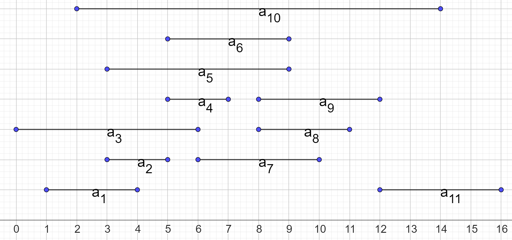
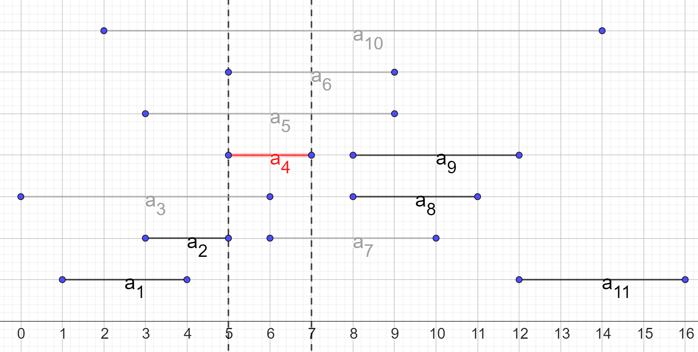
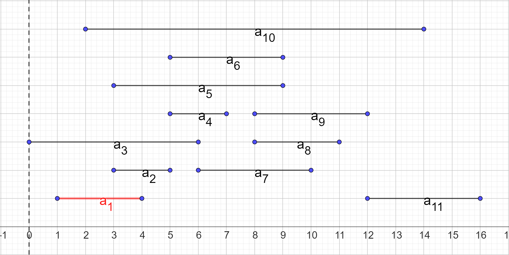
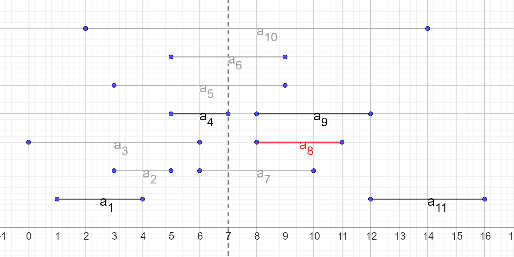

Алгоритмизация и Программирование
Морозов Владимир Игоревич
Жадные алгоритмы
Задача о размене
Сформулируем простую практическую задачу:
- У кассира есть неограниченное количество монет достоинством $50$, $25$, $10$, $5$ и $1$
- Кассиру необходимо выдать сдачу размером $48$
- Как выбрать монеты таким образом, чтобы потратить наименьшее их количество?
Интуитивное решение
- Как правило, кассиры, даже не задумываясь об этом, используют следущий алгоритм
- Набирать монеты наибольшего достоинства до тех пор, пока сумма не превышает нужную, потом перейти к монете достоинством ниже и т.д.
- Такой подход к решению задачи называется жадным
Жадный подход
- Задача о размене представляет собой классическую задачу оптимизации
- Жадным представленный подход назван потому, что на каждом шаге оптимизации не проводится перебор всех возможных решений с выбором наилучшего
- Вместо этого на каждом шаге мы «жадно хватаем» решение, которое кажется лучшим в данный момент, не заглядывая в будущее
Критерии жадного выбора
Сформулируем критерии жадного выбора, котрые позволяют сделать его правильно:
- Допустимость — выбор должен удовлетворять ограничениям задачи
- Локальная оптимальность — выбор должен быть лучшим среди всех доступных на данном шаге
- Окончательность — однажды сделанный выбор не может быть изменён в ходе последующей работы алгоритма
Критерии жадного выбора
Продемонстрируем, как эти критерии выполнены в представленном решении задачи о размене:
- Допустимость — мы берём только те монеты, добавление которых не превышает нужную сумму
- Локальная оптимальность — выбор наибольшей монеты на каждом шаге более всего приближает нас к итоговой сумме
- Окончательность — мы не меняем выбор монет
Недостатки жадного подхода
- Несмотря на простоту и эффективность жадного подхода, зачастую он не подходит для решения всех экземпляров задач
- К примеру, для номиналов $5$, $4$ и $1$ наш алгоритм не даст верного решения для суммы $8$
- Таким образом, при построении алгоритма с использованием жадного подхода необходимо уделять внимание доказательству его применимости в данной задаче
Задача о выборе процессов
Сформулируем ещё одну задачу:
- Пусть есть однопроцессорный компьютер
- Также есть множество процессов $S = \{a_1, a_2, ..., a_N\}$, готовых для выполнения
- $i$-ый процесс должен работать в течение интервала времени $[s_i, f_i)$
- Задача: выбрать максимальное подмножество непересекающихся по времени процессов
Пример
Рассмотрим пример входных данных для задачи, состоящий из $11$ процессов, отсортированных по времени завершения
| $i$ | $1$ | $2$ | $3$ | $4$ | $5$ | $6$ | $7$ | $8$ | $9$ | $10$ | $11$ |
|---|---|---|---|---|---|---|---|---|---|---|---|
| $s_i$ | $1$ | $3$ | $0$ | $5$ | $3$ | $5$ | $6$ | $8$ | $8$ | $2$ | $12$ |
| $f_i$ | $4$ | $5$ | $6$ | $7$ | $9$ | $9$ | $10$ | $11$ | $12$ | $14$ | $16$ |
Задача о выборе процессов

Задача о выборе процессов
Покажем, что задача образует оптимальную подструктуру:
- Пусть $S_{ij}$ – подмножество процессов, работающих между $i$-ым и $j$-ым процессом, $A_{ij}$ – оптимальное (максимального размера) подмножество таких процессов
- Пусть $A_{ij}$ содержит некоторый процесс $a_k$
- Тогда $A_{ij} = A_{ik} \cup \{a_k\} \cup A_{kj}$ (можно доказать от противного, см. [1])
Оптимальная подструктура
- То есть, выбрав процесс $a_k$, нам нужно рекурсивно искать оптимальные подмножества среди процессов, запускающихся после завершения $a_k$ и среди процессов, завершающихся до запуска $a_k$ (см. рисунок на след слайде)
- Вопрос состоит в том, как выбрать $a_k$
- Очевидно, $a_k$ нужно выбирать так, чтобы максимизировать количество процессов в $A_{ij}$
Шаг решения

Описание рисунка
На рисунке:
- Красным выделен процесс $a_k$ ($k = 4$)
- Серым выделены процессы, не входящие в подмножества $A_{ik}$ и $A_{kj}$, т.к. они пересекаются с $a_k$
- Пунктирными линиями показаны границы процесса $a_k$
Рекурсивная формула
- Запишем формулу для получения наибольшего количества процессов
- Обозначим за $c[i, j]$ размер оптимального подмножества для процессов между $i$-ым и $j$-ым
- Тогда: $$ \begin{equation*} c[i, j] = \begin{cases} \underset{a_k \in S_{ij}}{max}\{c[i, k] + c[k, j] + 1\},&S_{ij} \neq \emptyset,\\ 0, &S_{ij} = \emptyset. \end{cases} \end{equation*} $$
Оптимальная подструктура
- Как видно, оптимальное решение для большой задачи снова включает оптимальные решения для подзадач
- Также можно показать, что в данном алгоритме присутствуют пересекающиеся подзадачи
- Таким образом, эту задачу можно решать с помощью динамического программирования, запоминая решения для всех $c[i, j]$
Жадный выбор
- Обратим внимание на важный момент: в рассмотренных ранее задачах оптимизации мы делали выбор из ряда оптимальных решений, получая их посредством рекурсивного решения меньших подзадач
- Такой подход довольно успешен, но иногда можно сделать решение более эффективным посредством жадного выбора
- Жадный выбор – такой выбор подзадачи, который представляется оптимальным до её непосредственного решения
Жадный выбор
- Можно применить жадный выбор в данной задаче
- Тогда, вместо перебора всех $a_k$ в поисках оптимальной комбинации подзадач, будем всегда брать процесс, заканчивающийся раньше остальных
- Если изначально мы отсортировали процессы по времени окончания, такой выбор оставит всего одну подзадачу вместо двух
Жадный выбор
- В [1] доказано, что такой жадный выбор приводит к оптимальному решению
- Алгоритмы, осуществляющие жадный выбор вместо перебора всех вариантов, называются жадными алгоритмами
- Задачи, решаемые жадными алгоритмами, так же должны представлять оптимальную подструктуру, однако всегда необходимо доказывать, что жадный выбор действительно ведёт к оптимальному решению
Демонстрация работы
- Покажем, что жадный выбор работает для задачи о выборе процессов
- На каждом шаге будем присоединять к решению процесс с наименьшим временем завершения
- На рисунках красным выделен присоединяемый на данном шаге процесс, пунктиром – время окончания последнего процесса в оптимальном подмножестве
Шаг 1

Шаг 2

Шаг 3

Шаг 4

Результат

Демонстрация работы
- На последнем рисунке показан результат работы жадного алгоритма: оптимальное подмножество из $4$ процессов
- Путём полного перебора можно увидеть, что это действителньо оптимальное решение (но есть ещё одно равносильное)
- Данный жадный алгоритм работает за $O(N)$ в случае, если процессы отсортированы по времени завершения
- Предыдущее решение этой задачи с мемоизацией работало за $O(N^2)$
Континуальная задача о рюкзаке
- Континуальная (непрерывная) задача о рюкзаке формируется так же, как дискретная, за тем лишь исключением, что вор может взять не весь предмет целиком, а любую его часть
- Для дискретной задачи удобно представлять, что вор крадёт штучные товары, например, слитки драгоценных металлов
- Для континуальной задачи более удобным представлением будет кража, к примеру, жидких химических соединений или песка драгоценных металлов
Континуальная задача о рюкзаке
- В отличие от дискретной задачи, жадный выбор в континуальной задаче о рюкзаке приводит к оптимальному решению
- Выбор состоит в том, чтобы набирать максимальное количество товара с наибольшей стоимостью на единицу веса
- Если такой товар закончился, а рюкзак не заполнен, можно переходить к второму по удельной стоимости товару и т.д.
Пример задачи
В качестве примера возьмём маленький экземпляр задачи о рюкзаке со следующими параметрами: $W = 4$
| $i$ | $1$ | $2$ | $3$ | $4$ |
|---|---|---|---|---|
| $v_i$ | $12$ | $10$ | $20$ | $15$ |
| $w_i$ | $2$ | $1$ | $3$ | $2$ |
Решение
Для начала вычислим удельные стоимости предметов (на единицу веса)
| $i$ | $1$ | $2$ | $3$ | $4$ |
|---|---|---|---|---|
| $v_i$ | $12$ | $10$ | $20$ | $15$ |
| $w_i$ | $2$ | $1$ | $3$ | $2$ |
| $v_i / w_i$ | $6$ | $10$ | $6.67$ | $7.5$ |
Решение
Теперь будем брать максимум предметов с наибольшей удельной стоимостью
- Начнём с предмета $2$, он поместится в рюкзак целиком и останется $3$ места
- Далее положим весь предмет $4$, после чего останется $1$ места
- И, наконец, положим $1$ единицу предмета $3$, после чего место закончится, а суммарная стоимость составит $1 \cdot 10 + 2 \cdot 7.5 + 1 \cdot 6.67 = 31.67$
Кодирование информации
- Пусть дан текст из $N$ символов, составленный только из букв некоторого алфавита $A$
- Пусть также для каждого символа известна частота его появления в тексте $f$
- Необходимо закодировать каждый символ текста двоичными числами для передачи по каналу связи
Пример задачи
- Пусть $N = 100000$, $A = \{a, b, c, d\}$
- Частоты появления символов представлены в таблице
| Символ | $a$ | $b$ | $c$ | $d$ |
|---|---|---|---|---|
| Частота | $0.75$ | $0.2$ | $0.04$ | $0.01$ |
Пример решения
- Воспользуемся простым решением — построим равномерный код
- Это такой код, где каждому символу сопоставляется одинаковое количество бит
- Таким образом, для кодирования $100000$ символов понадобится $200000$ бит
| Символ | $a$ | $b$ | $c$ | $d$ |
|---|---|---|---|---|
| Код | $00$ | $01$ | $10$ | $11$ |
Альтернативное решение
- А теперь возмём код переменной длины
- Например, такой:
- Для кодирования $100000$ символов в данном случае понадобится $100000 \cdot 0.75 \cdot 1 + 100000 \cdot 0.2 \cdot 2 + 100000 \cdot 0.04 \cdot 3 + 100000 \cdot 0.01 \cdot 3 = 130000$ бит
| Символ | $a$ | $b$ | $c$ | $d$ |
|---|---|---|---|---|
| Код | $0$ | $10$ | $110$ | $111$ |
Обсуждение решений
- Как видно, код переменной длины дал выигрыш в $70000$ бит, что составляет $35\%$ от длины равномерного кода
- Как построить такой код для произвольной задачи?
- Прежде всего, необходимо отметить, что такой код должен быть префиксным — ни один код символа не должен быть началом кода другого символа
Дерево кодирования
- Чтобы строить префиксные коды, удобно пользоваться деревьями кодирования
- Это двоичные деревья, листья которых представляют кодируемые символы
- В нелистовых узлах помещается сумма частот дочерних узлов
- Ребро к правому потомку помечается битом $1$, к левому — битом $0$
- Построим такое дерево для нашего равномерного кода
Дерево кодирования для равномерного кода
Пояснения
- Код символа в представленном дереве можно получить, пройдя по простому пути от корня до нужного листа и выписав метки рёбер
- Эффективность дерева определяется его весом — суммой произведений частот символов на их глубину в дереве
- Вес представленного дерева: $2 \cdot 0.75 + 2 \cdot 0.2 + 2 \cdot 0.04 + 2 \cdot 0.01 = 2$
- Построим такое дерево для кода переменной длины
Дерево кодирования для кода переменной длины
Обсуждение
- Вес представленного дерева $1 \cdot 0.75 + 2 \cdot 0.2 + 3 \cdot 0.04 + 3 \cdot 0.01 = 1.3$
- Остаётся вопрос: как строить такие деревья?
- В 1952 году Дэвид Хаффман разработал жадный алгоритм, который позволяет это делать
- Получаемые с помощью этого алгоритма оптимальные префиксные коды называются кодами Хаффмана
Построение кода Хаффмана
- Поместить все листья-символы в очередь с приоритетами
- Извлечь из очереди два узла с наименьшими частотами и соединить их в один узел дерева
- Поместить полученный узел в очередь
- Пока в очереди есть узлы, возвращаться к шагу $2$
Шаг 1
Шаг 2
Шаг 3
Шаг 4
Шаг 5
Шаг 6

Результат
Обсуждение
- Алгоритм построения кодов Хаффмана считается жадным, потому что на каждом шаге наиболее глубокую позицию в дереве занимает пара узлов с наименьшей суммарной частотой
- Доказательство корректности данного алгоритма представлено в [1]
Полезные источники
- RU Томас Х. Кормен, Чарльз И. Лейзерсон, Рональд Л. Ривест, Клиффорд Штайн. Алгоритмы: построение и анализ, 3-е издание. Глава 16 — Основная книга нашего курса.
- RU А.Левитин. Алгоритмы: введение в разработку и анализ. Глава 9. Описана задача о размене и деревья Хаффмана.
- RU Альтернативное изложение материала про коды Хаффмана с кодом на C++
Полезные источники
- EN Немного подробнее про континуальную задачу о рюкзаке
- EN Визуализация построения кодов Хаффмана